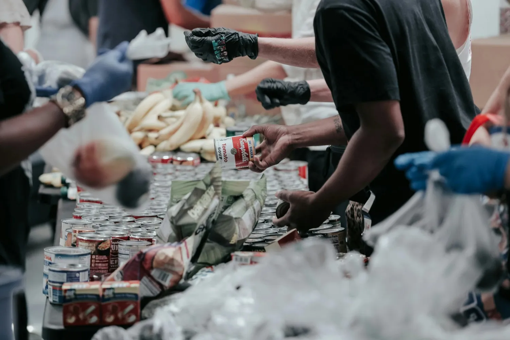

Education
Education
Primary Learning Stacks
Building physical classrooms, supplying interactive learning gear, and staging professional educator deployment loops.
Raised: $14,250
71%
Welfare Foundation


Stackly Foundation brings communities together to uplift lives. By layering reliable educational setups, clean water systems, and local healthcare infrastructure, we are creating sustainable stepping stones out of poverty.

Just like in our field missions, no one gets left behind. The platform link you followed might have been moved, renamed, or temporarily layer-deactivated, but our emergency navigation routing framework will slide you back safely.

Explore our structural development frameworks. We deploy resources sequentially to build long-term, self-sustaining community foundations.
Education
Building physical classrooms, supplying interactive learning gear, and staging professional educator deployment loops.
 Clean Water
Clean Water
Drilling deep solar-powered community wells and establishing regional micro-filtration distribution pipelines.

HealthcareOrganizing local clinical screening trucks, emergency medical supply access, and maternal health monitoring camps.
Change isn’t built overnight; it is stacked intentionally. Our network of over 450+ dedicated volunteers enters crisis ecosystems to establish baseline water, nourishment, and educational facilities, ensuring long-term self-reliance.
Global Lives Impacted
Active Field Experts
Global Projects Staged
Resource Efficiency
Access field expert login terminals, onboarding schedules, and mission deployment calendars.
Open Portal →Submit emergency relief requests, coordinate corporate sponsorships, or contact operations teams.
Secure Connect →Download audited deployment sheets, block funding receipts, and verified annual ledger metrics.
Verify Ledger →If a path broke or returned a 404 layout error, let our automated tracking framework slide you home safely.
Return Home Safely →
"Deploying educational setups with Stackly has changed how we target localized aid. The transparent resource tracking and structured deployment loops ensure deep value hits families instantly."
"Flexible relief setups and clear fiscal data blocks made corporate board authorization stress-free. Navigating micro-funding targets has transformed entirely into an active, transparent platform pipeline."